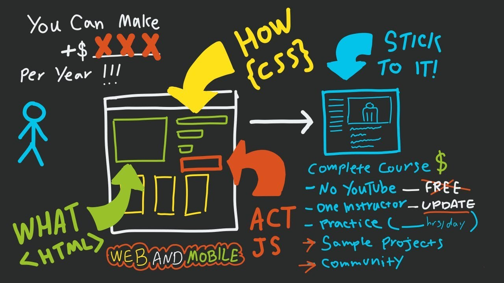

Herzlich Willkommen!
Diese Website mit dem Namen "SofaWeb - Web-Technologien" wurde im Rahmen der Studienleistung für das Modul "Web-Technologien" im Fernstudiengang des "Virtuellen Aus- und Weiterbildungsstudiengangs Wirtschaftsinformatik" (kurz: "VAWi") im Sommersemester 2021 aufgesetzt.
SofaWeb widmet sich dem Überblick über die einzelnen Aspekte von Web-Technologien. Die Webseite soll einen Überblick über den Aufbau und einzelnen Technologien des Webs, HTML als Auszeichnungssprache und CSS als Gestaltungssprache für Webseiten bieten. Später soll zudem JavaScript als dynamische Komponente von Webseiten vorgestellt werden.
SofaWeb richtet sich an alle Interessenten der Web-Technologien, Kommilitonen und angehende Web-Entwickler.